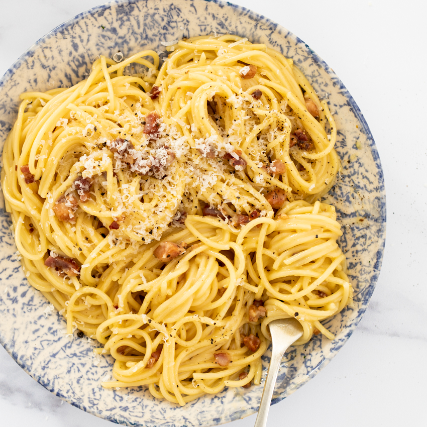

Spaghetti Carbonara

Description
Spaghetti Carbonara is a classic italian dish. The pasta is coated with a smooth and creamy egg and cheese mixture, combined with the delightful taste of panchetta. The salt and fat along with the soft textures of the spaghetti make for a perfect meal for a date or self care day.
Ingredients
- 1/2 lb pancetta
- 3 eggs
- 1 egg yolk
- 4 oz pecorino romano cheese
- Ground black pepper
- Kosher salt
- 16 oz spaghetti noodles
Steps
- Combine 3 eggs with egg yolk
- Grate cheese into eggs, beat until homogeneous
- Season egg mixture with pepper
- Dice pancetta, add to cold pan, then turn stove to medium
- Cook until fat is rendered, but not too crispy, then turn off heat
- Add noodles to large pot of heavily salted water, cook to desired texture
- Add cooked noodles to pan with pancetta and toss to cover in fat
- Quickly add egg and cheese mixture and mix rigorously
- Plate and serve